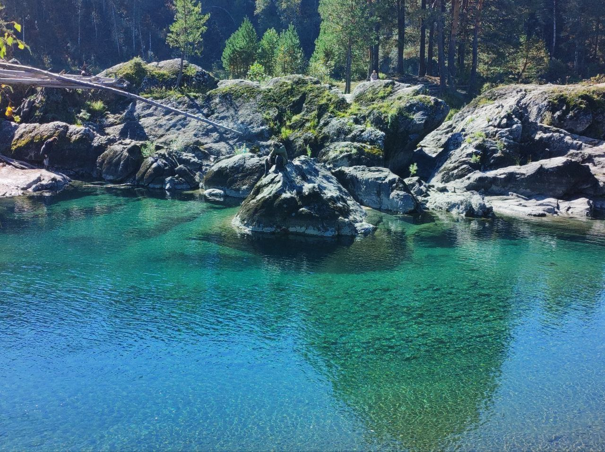

Корпоративные выезды и программы
Групповые форматы, где важны программа, люди, тайминг, подрядчики, безопасность и состояние команды.
Создаю и организовываю путешествия, маршруты и групповые выезды: от идеи и программы до логистики, людей, безопасности и живого опыта в пути. Санкт-Петербург.
Обо мне
В моем опыте есть корпоративные выезды, авторские международные маршруты, походы, сплавы и работа на спортивных событиях. Мне важно не просто выбрать точки на карте, а собрать ритм поездки, понятную логистику, безопасную среду и живой опыт для людей в группе.
Структура опыта
Групповые форматы, где важны программа, люди, тайминг, подрядчики, безопасность и состояние команды.
Самостоятельная сборка путешествий: перелеты, жилье, перемещения, активности, документы и запасные сценарии.
ПВД, сплавы, горные переходы и практический опыт движения в природной среде.
Трасса, разметка, пункты питания, старт/финиш, судейство и работа команды в день события.
Корпоративные выезды

Алтай, 2024. Корпоративный командообразующий выезд.
Командообразующий выезд, который соединил природную среду, культурный контекст Алтая, активности и обучающие блоки. Я участвовал в разработке маршрута и программы, встраивал работу тренеров и отвечал за группу и безопасность на протяжении путешествия.
Здесь ты не покоритель, здесь ты гость.
Групповые форматы: работа с людьми, ритмом дня и безопасной организацией.
Опыт участия в организации корпоративных мероприятий разного масштаба: от камерных командных форматов до событий для больших групп. Этот блок важен как практическая база: ожидания участников, тайминг, коммуникация, работа с подрядчиками и множество деталей, от которых зависит качество события.
Международные маршруты
Таиланд, 2025. Пхукет, Кхао-Сок, Чео-Лан и Бангкок; визуальный ряд будет добавлен после отбора фотографий именно из этой поездки.
Путешествие в новую для себя страну, собранное с нуля: Пхукет, серф-проба, залив Пханънга, Кхао-Сок, озеро Чео-Лан и Бангкок. Маршрут пришлось собрать в сжатые сроки вместе с документами для международных прав, отелями, перемещениями и активностями.


Япония и Южная Корея, 2024. 12 дней, 2 участника.
Самостоятельно собранное путешествие через Токио, Фудзикавагутико, Осаку, Киото, Фукуоку, Пусан и Сеул. Я планировал программу дней, перемещения и логику маршрута, адаптируя план по ходу поездки под состояние, город и открывающиеся возможности.
Этот маршрут показал, как много решает не список мест, а последовательность: когда город, природа, переезд и отдых стоят на своих местах.
Походы, сплавы и outdoor
Два сплава со Stella в 2025 году: майский спортивный поход и августовский маршрут по Шуе в роли помощника инструктора.
Stella Karelia
ПВД и локальные маршруты из Петербурга: Веремянский маршрут, Сестрорецкое болото, группы друзей и простая организация дня.

Личные горные переходы с рюкзаком, ночевками и ответственностью за второго человека: Кармадон, Фиагдон, Даргавс, Дигория.
Волонтерство и спортивные события


Elbrus World Race, 2021. Автономная группа на западной стороне Эльбруса.
Пятидневная автономная работа на западной стороне Эльбруса, в районе Хурзука. В составе волонтерской группы я занимался разметкой трассы, подготовкой пункта питания, перевозкой вещей и организацией работы участка.

Пункты питания, старт/финиш, выдача, разметка трассы и физическая работа на точке. Трейловые события как школа полевой организации.
Wild Trail / Sport-Marathon Fest
Судейство и организация мультигонок с препятствиями: подготовка этапов, проведение, разборка и работа команды на маршруте.
Гонка ГТО
Опыт работы на спортивных событиях, где важны регламент, поток участников, коммуникация и спокойная точность в день старта.
Московский полумарафонКонтакты
Артем Савонин, Санкт-Петербург. Портфолио можно отправлять как спокойное представление опыта: без тяжелых приложений, с фокусом на реальные кейсы, роли и визуальные материалы.